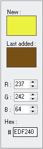

Color values

Every time when you select a new color in the application, the new color will shows in the rectangle area named
New
.
The rectangle area named
Last added
refers to the last color you added into your palette.